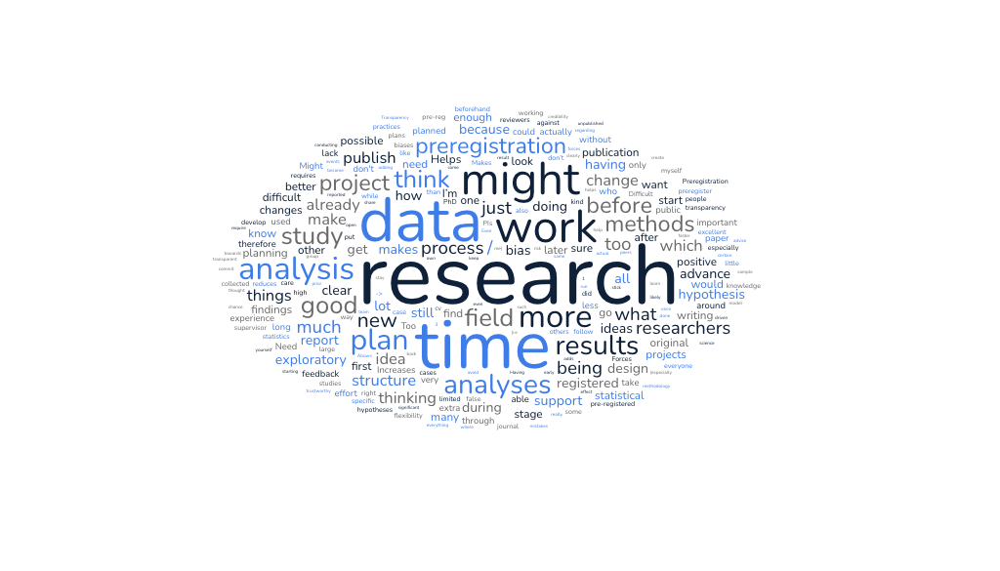

Challenges and opportunities of preregistration
Recap: So far we have covered why the practice of preregistration came about, and how to do a preregistration. Now we will outline some of the main challenges and opportunities of preregistration.

Benefits of preregistration
Now we will consider how benefits and opportunities of preregistration exist from individual researchers all the way to the wider research ecosystem.
Benefits for researchers
Improved planning and project management:
The process of filling out preregistration document helps identify key information needed at study design stage
Outlining data collection methods and analysis plans which reduces ambiguity and errors during data analysis stage
Do you remember the dilemma Max was having? Having a well thought out analysis plan with a clear decision tree would help mitigate encountering Max’s situation in the future.
Builds your reputation
Transparently show to the wider research community your plans and tests
Signal that you have taken steps to mitigate against hindsight and confirmation bias (Wagenmakers and Dutilh 2016).
Easier to write up and publish findings
Front loading the thinking and planning makes writing up results and discussion a smoother process
If you preregister your analytic code on simulated data the results of your confirmatory analyses will be generated quicker once you have collected and cleaned data
If preregistration is approved as a registered report during stage 1 journal peer review, you have “in-principle acceptance”
Visible productivity
- Publicly sharing outputs that others can evaluate beyond a journal article (as evaluation of outputs can be influenced by journal prestige)
Benefits for teams
Clearer involvement of collaborators/project partners
Provides opportunities for project partners to discuss and refine plans before data collection
Detailed research plans provide clarity for project partners, which is increasingly important in the era of large-scale collaborations
Benefits to wider research ecosystem
Increase research credibility and bias
Mitigates against questionable research practices
Offers more complete reporting and transparency of research project
Reduces publication bias, as preregistration/registered report is available to read (if not embargoed)
Check thinking
Other people reading your findings can follow your thought process
Gain a deeper understanding of a project and make an informed assessment (Binney et al. 2025)
Can you think of other benefits of preregistration in your research area?
Challenges of preregistration
There remains a number of barriers to the widespread adoption of preregistration. There are significant challenges present in the current research and assessment culture (e.g. “publish or perish”) which influences the uptake of preregistration. Researchers have different knowledge and experience levels with Open Science practices that reflect in attitudes and adoption of preregistration. This section outlines some of the commonly perceived barriers and presents some solutions.
Challenges: time
“I haven’t got time to do a preregistration”
Reframing: front-loaded effort during the planning stage can help later on during write up and during peer review (remember the benefits to researchers above)
Peer Community in Registered Reports is an initiative where the research community reviews and recommends registered reports. There is the option to speed up the Stage 1 peer review of a registered report with the ‘scheduled review’ track. Authors initially submit a one-page “snapshot” instead of a full stage 1 report.
Challenges: statistical confidence
“How do I know my planned statistical analysis is the right one?”
Strategy: Simulate random data with the distribution and sample size of expected real data and run the statistical test planned for the study. Repeat the statistical test (e.g. 100 x) and check results are within the false-positive finding rate of 5%. Run a power analysis by simulating data with the expected effect size for the study and check model registers effect at least 80% of the time.
Challenges: lack of incentives
“I don’t see the point”
Counterargument: aside from individual researcher benefits (increased reflection, reduced likelihood of systematic errors), journals are increasingly prioritizing study preregistrations.
Next time you read a journal article in your field, take a look at the journal’s webpage and see if they accept preregistered studies and if there are guidelines for publishing registered reports. This information is usually in the author resources/guidelines section.
Challenges: overwhelm
“There is so much that goes into a study registration”
Counterargument: templates and FAQ pages can guide you and if you are unable to officially register a study, adopting principles of study preregistration is a good step (e.g. Open Science Buffet approach, (Bergmann 2023))
Challenges: lack of support
“No one in my team knows or cares about study preregistration”
Strategy: Often a reluctance to try out preregistration comes from a place of lack of familiarity with the process.Sharing resources, and suggest a group meeting to discuss/learn more about preregistration to increase familiarity. Reframe preregistration as a creative opportunity to plan great science! Planning is where the science is, as other research processes, like data collection can be delegated.
Relate to this challenge? See the preregistration case study which provides a number of strategies.